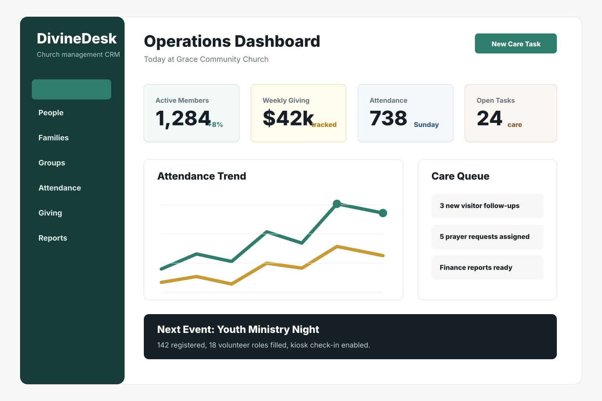
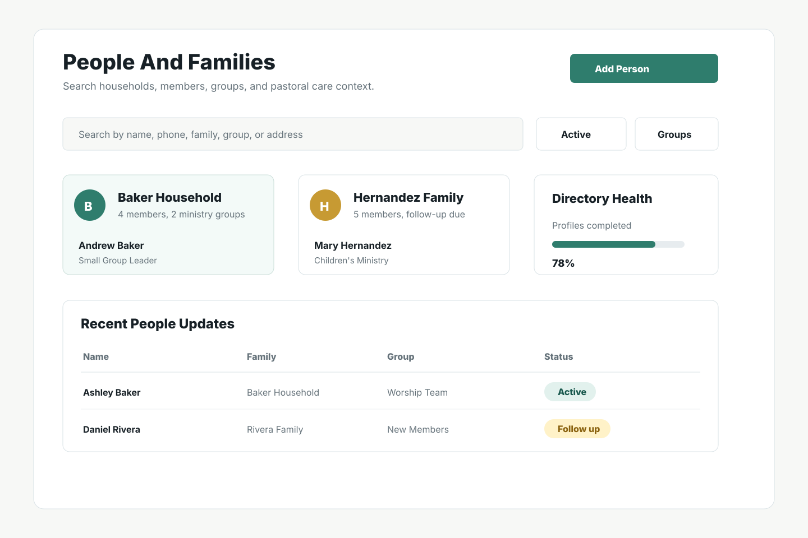
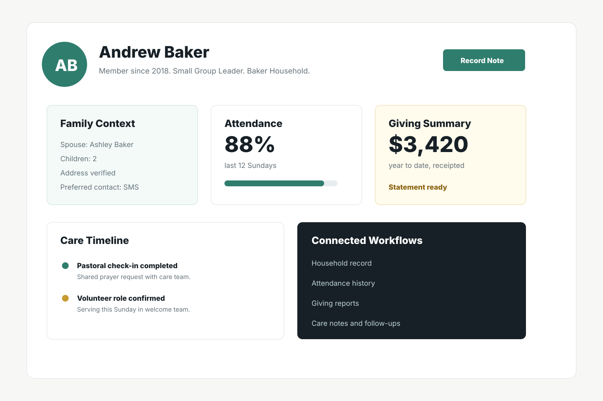
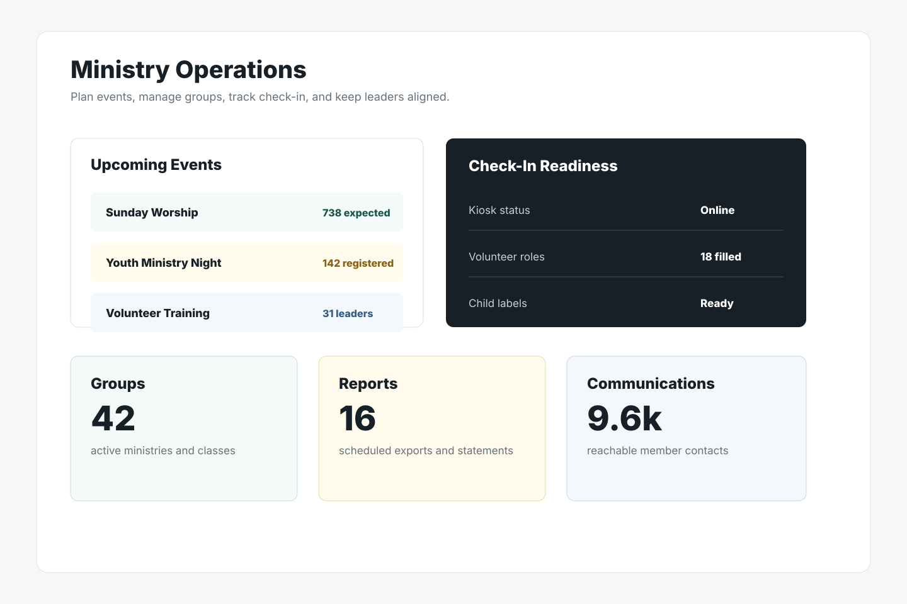

People and families
Households, member records, pastoral notes, demographics, and communication history.
Private source. Public case study.
A church-management workspace for people, families, groups, attendance, giving, events, communications, and daily ministry operations.

Problem
DivineDesk keeps the proven ChurchCRM foundation while presenting a calmer, branded product experience for administrators, ministry teams, and congregations.
Households, member records, pastoral notes, demographics, and communication history.
Groups, classes, attendance, check-in, calendars, and event workflows.
Pledges, deposits, donor records, statements, and practical finance reporting.
Screenshots



Engineering
Visible product copy uses DivineDesk, while internal ChurchCRM identifiers remain in place where they protect route, API, database, generated asset, and ecosystem compatibility.